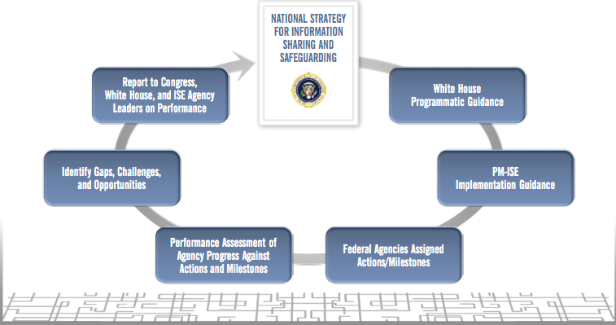
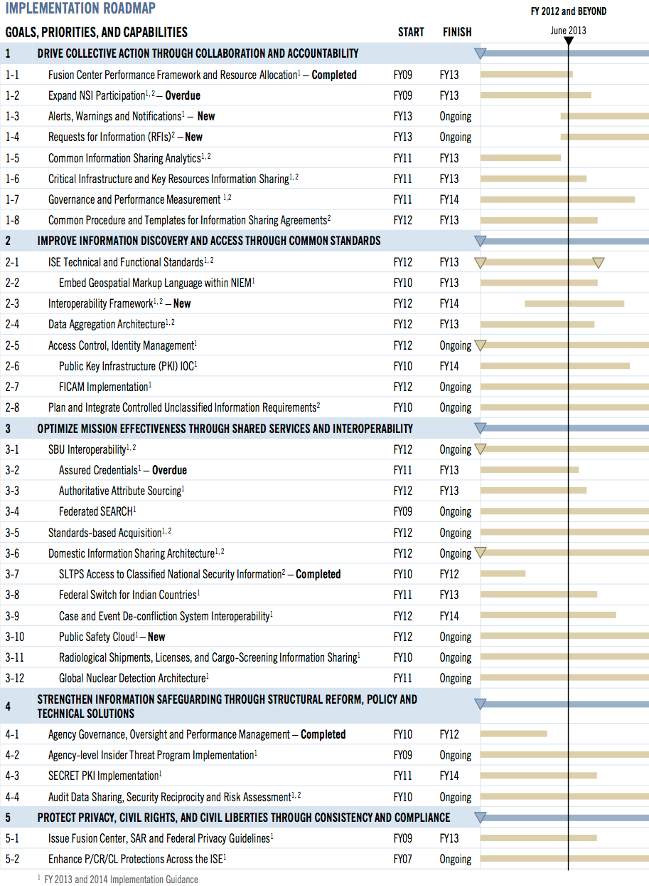

Information Sharing Environment
2013 Annual Report to the Congress
NATIONAL SECURITY THROUGH RESPONSIBLE INFORMATION SHARING
NATIONAL SECURITY THROUGH RESPONSIBLE INFORMATION SHARING
The security of the Nation hinges on the ability to affect "... collaboration across the Federal Government—and with our state, local, tribal, private-sector, and international partners ..."[59]
In December 2012 the President issued the National Strategy for Information Sharing and Safeguarding (National Strategy), which provides a roadmap for a broader collective effort of responsible sharing and safeguarding of national security information, while reaffirming existing ISE policies and strategies. The National Strategy has established principles, goals, and a set of priority objectives that create a vision and a way forward for the ISE.
On behalf of the President, PM-ISE plans for and monitors the implementation of the ISE[60] under the broad framework and vision of both the 2012 National Strategy and the 2007 National Strategy for Information Sharing and Executive Orders 13388, Furthering Strengthening the Sharing of Terrorism Information to Protect Americans and 13587, Structural Reforms to Improve the Security of Classified Networks and the Responsible Sharing and Safeguarding of Classified Networks. With the release of EO 13636, Improving Critical Infrastructure Cybersecurity, and PPD-21, Critical Infrastructure Security and Resilience, PM-ISE is engaged with the National Security Staff and agencies to develop plans to extend ISE management frameworks and activities to also support effective federal progress with cybersecurity information sharing.
As described throughout this Report, significant progress has been made over the year implementing ISE capabilities, by advancing responsible information sharing, improving decisionmaking, and promoting partnerships. This section builds on last year's Way Forward and is informed by both qualitative and quantitative assessments of that progress, performance, and challenges over the past year.
Under the ISA IPC, co-led by PM-ISE and the National Security Staff, a government-wide effort is underway to prioritize, plan, and coordinate continued, agency-based implementation of the ISE via a focus on the priority objectives of the National Strategy. Working in coordination with NSS, PM-ISE has set clear, unified and integrated priorities that span across the policy framework described above. PM-ISE priorities are described later in this section.
Overall, PM-ISE has embraced the new tasks and the larger scope of the ISE while addressing the U.S. Government Accountability Office's (GAO) concerns, as outlined in GAO's Terrorism-Related Information Sharing High Risk List.[61]
The National Strategy, supported with White House Programmatic Guidance, has updated the vision for the ISE. Both are rooted in the requirements of Intelligence Reform and Terrorism Prevention Act (IRTPA). Together they form the core drivers of PM-ISE's annual capability-focused Implementation Guidance. The PM-ISE Implementation Guidance is developed in partnership with the agency-based stewards of the National Strategy's 16 priority objectives, and provides the basis for a system-wide set of milestones and timelines for the following year, as required by IRTPA.[62] Overall, the annual planning cycle helps move agencies closer to the target vision of national security through responsible information sharing.

Figure 7. ISE Annual Planning Cycle.
The PM‐ISE Implementation Guidance outlines the actions assigned to specific federal agencies, articulates the desired milestones and timelines, and identifies the sequenced requirements needed to improve responsible information sharing and safeguarding for targeted capabilities, programs, systems, and initiatives. Annual performance assessments measured against this guidance provide accountability for progress over time, enabling leadership to make informed programmatic and budget decisions in subsequent years. The status of completed and incomplete Implementation Guidance actions can be found in Table 2 in Section 6 of this report.
Agencies lead the delivery, operation, and use of the ISE, and are accountable to the White House for the goals and actions identified in programmatic and ISE Implementation Guidance. Agencies are committed to responsible information sharing under the National Strategy through their participation in the ISA IPC, the White House‐chaired Senior Information Sharing and Safeguarding Steering Committee, and the Federal Chief Information Officers Council.
Planning under the National Strategy highlighted a government‐wide need to better describe and specify common requirements for interoperability and to promulgate guidance on applying sound information management principles and practices. The ISE Interoperability Framework (I2F), described in Section 3 of this Report, provides an interoperability‐focused enterprise architecture capability for the ISE. The I2F describes a coordinated approach to interoperability built on common ISE intellectual property: a unifying architecture framework anchored under OMB’s Common Approach, common profiles, standards and standards‐based acquisition, and reference architectures. Agencies will use I2F to enable integration of core ISE standards and architecture frameworks into their information technology decisions and implementations, by providing a direct reusable way of leveraging cross-‐cutting standards and architecture, and interoperable capabilities. The I2F is foundational to defining and adopting baseline capabilities and common requirements that enable data, service, and network interoperability, and to implementing the Federal IT Shared Services Strategy to facilitate adoption of shared services.
PM‐ISE is also developing an ISE Management Plan, consistent with existing policy and guidance from the White House, designed to guide how PM‐ISE and ISE stakeholders collaborate, using common business processes and tools, to create a unity of effort across the government in advancing the implementation of the ISE.
The Management Plan describes a process‐oriented approach to effectively manage the implementation of strategic priorities for responsible information sharing. It serves as a resource for ISE stakeholders, providing mechanisms they can use to participate in the ISE, and includes a repository of relevant guidance, directives, and illustrative use cases. The ISE Management Plan will benefit stakeholders by demonstrably providing guidance on how ISE stakeholders:
Identify, prioritize and resolving common problems;
Assess and manage performance gaps;
Harmonize policy;
Convene communities of interest; and
Leverage and extend good ideas, best practices, and tools.
The PM-ISE intends to document these management processes and the I2F to increase awareness, facilitate stakeholder integration, and institutionalize management capabilities across the ISE.
As previously done in the 2012 Annual Report, PM-ISE has updated an implementation roadmap to plan and coordinate a sustainable agency-based approach to accomplishing the goals and realizing the vision of the National Strategy, using the ISE Annual Planning Cycle, and the management processes described above and in Section 6 of this report. Over the past year, the ISE has undertaken a significant effort to clearly define and prioritize the challenges to realizing the vision of the National Strategy. This strategic gap analysis resulted in an interagency consensus on 16 priority objectives, outlined in the National Strategy, charting a path forward for the ISE.
The chart of the implementation roadmap that follows indicates which priorities and capabilities are now completed, and which are still outstanding. Those that are currently underway, overdue, or newly defined are also identified. The PM-ISE and agencies via the ISA IPC have used the ISE Annual Planning Cycle to update the Implementation Roadmap, anchored in the prior year's work, with a forward-looking view of advancing National Strategy priority objectives.
Extensive government-wide planning anchored in the ISA IPC has allowed for updating incomplete actions and detailing newly defined actions, sequenced across a multi-year horizon. Agencies are charged with implementation, and assessed with performance measures; all of which establishes a means for measuring progress toward National Strategy goals.
Those capabilities that are determined "complete" have been done so based on agency reports in the ISE performance questionnaire, tests of the mission-based scenarios, as well as the completion of milestones and delivery of outcomes assigned in the annual ISE Implementation Guidance. Agency implementation of the roadmap is subject to the availability of appropriations, based on agency budgets, and regularly reviewed and adjusted through a change management process led by the ISA IPC.
Agency adoption and integration of the process and tools described in the ISE Management Plan and the I2F will increase the maturity of ISE implementation planning, change management and investment management and the overall effectiveness of information sharing and safeguarding.
The implementation roadmap, framed by the goals of the National Strategy, and updated to include FY 2014 Implementation Guidance, is shown below:

Figure 8. Implementation Roadmap.
Those capabilities that have not yet been achieved are identified via the test scenarios, the annual performance questionnaire and gap analysis, and interagency planning efforts. We expect to see PM‐ISE and our partner agencies deliver material progress on the following capabilities called for in the National Strategy during the next reporting period:
Achieve a responsible information sharing culture that leverages best practices throughout government, both federal-wide and agency-based, including state, local, and tribal government as well as critical infrastructure and key resources, and private-sector stakeholders where appropriate (Figure 8: 1.6 and 1.7)
Expanding re-use of existing information sharing tools and technologies, such as standardizing agency-level services to align across the ISE; creating common exchange processes across all levels of government to enable timely receipt and dissemination of information and appropriate responses (RFI and AWN); expanding NSI participation (Figure 8: 1.2, 1.3, and 1.4)
Common procedures and templates for interagency information sharing agreements; reducing the time needed to build sharing agreements; more attention devoted to sharing information with the appropriate users in a timely and trusted manner (Figure 8: line 1.8)
Embedding geospatial tags into our ISE information sharing standards (Figure 8: 2.2)
Improved communication of ISE requirements to allow industry adoption of interoperability frameworks (Figure 8: 2.3)
Discovery and correlation of information across disparate holdings to allow data originators to see that responsible information sharing policies are enforced, and that authoritative, up-to-date information to identify relationships between people, places, things and characteristics that are not otherwise obvious are referenced (Figure 8: 2.4)
Assured credentialing across SBU security networks (Figure 8: 3.2)
Authoritative attribute sourcing (Figure 8: 3.3)
Transformation of a domestic information sharing architecture, integrating the community through participation in common task forces and functions to enable common functions, such as event deconfliction to promote officer safety (Figure 8: 3.6 and 3.9)
Insider-threat program implementation across all agencies that have access to classified information (Figure 8: 4.2)
Shared audit and cyberthreat information on interconnected networks (Figure 8: 4.4)
Develop and implement effective compliance, oversight, and accountability mechanisms to ensure consistent application of mission-appropriate P/CR/CL protections. (Figure 8: 5.1 and 5.2)
PM-ISE, in accordance with IRTPA, has documented a set of missions and priorities designed to further the ISE.
Necessarily an agile organization due to its multiple roles and responsibilities, PM-ISE is able to adjust to new requirements for responsible information sharing between federal, state, local, tribal, and private-sector partners. Though many ISE priorities are addressed through the separate governance structures, PM-ISE's role and authority as an executive agent allow for an integrated perspective and a unique view of complementary activities, dependencies, enabling cross-cuts, alignment, and overlapping missions.
With its integrated view of National priorities, PM-ISE has affirmed the following vision and missions to define its body of work for the next year, to include facilitating or supporting, coordinating and executing the ISE initiatives agreed to in the Implementation Roadmap.[63]
Innovate and standardize information sharing capabilities nationwide to support more effective and efficient decisionmaking (Figure 8: 3, 3.1, and 3.10)
Transform the domestic information sharing architecture to better identify and respond to threats (Figure 8: 1.2, 3.6, and 3.10)
Support technical implementation of cybersecurity information sharing efforts by extending the use of ISE tools (Figure 8: 2.3, 2.4, 3, and 4.4)
Achieve greater interoperability through consensus-based standards and increasing the use of standards in grants and acquisitions (Figure 8: 2.1, 2.3, and 3.5)
Interconnect existing networks and systems with strong identity, access, and discovery capabilities (Figure 8: 2.5 and 2.7)
Standardize, reuse, and automate information sharing policies and agreements with strong protection of privacy, civil rights, and civil liberties (Figure 8: 1.8 and 5)
Align and institutionalize governance to foster better decisionmaking, accountability, and implementation (Figure 8: 1.1, 1.7, and 4.1)
Build responsible information sharing culture and capabilities through engagement, coordination, training, the sharing of best practices, and performance management (Figure 8: 1.6, 1.7, and 3.8)
We have faced exceptional challenges over the past year, including new and evolving threats, increasing amounts of data to manage, and a constrained fiscal environment. PM-ISE and our partners have continued to make progress in advancing our vision of national security through responsible information sharing. Collectively we have laid a path and are building on existing efforts to strengthen national capabilities.
As the National Strategy outlines in its Way Forward:
"Together, we can reach beyond legacy information sharing protocols and embed in our missions and cultures the assurance decisions are better informed when supported by all relevant information. This also requires, however, a balanced commitment to appropriately safeguard information, its sources, and collection methods, while also respecting legal and policy restrictions on use. Success depends upon the collective ability to achieve equilibrium between sharing and safeguarding, build on past successes, and continue the maturation of the Information Sharing Environment."
In the coming year, we will continue to use all of our tools and capabilities to support implementation of the National Strategy and to build a stronger information sharing environment. Together with our mission partners, we will enhance national security through responsible information sharing.
[59] National Security Strategy, 2010, pg. 51
[60] IRTPA Sec 1016(f)(2)(A)(i).
[61] GAO-13-283 High Risk Series Update, February 2013.
[62] IRTPA Sec 1016 (h) (2) (B)
[63] Many items in the ISE Implementation Roadmap are led and executed by ISE agencies. In those cases, PM-ISE only serves in a monitoring role and therefore direct alignment will not be shown in the PM-ISE vision and mission.